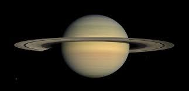

MERCURY
Mercury, closest to the Sun, features a heavily cratered surface. It experiences extreme temperature fluctuations due to its lack of atmosphere. A day on Mercury is longer than its year due to its slow rotation.
NO. OF MOONS: 0
VENUS

Venus, Earth's "sister planet," is shrouded in a thick atmosphere, trapping heat. Surface temperatures are hot enough to melt lead. It rotates in the opposite direction to most planets.
NO. OF MOONS: 0
EARTH

Earth is the only known planet to support life. Its atmosphere, rich in oxygen and nitrogen, is conducive to life. Magnetic field shields Earth from harmful solar radiation.
NO. OF MOONS: 1
MARS
Mars is known as the "Red Planet" . Olympus Mons and Valles Marineris are notable landmarks. Mars once had liquid water, sparking interest in its potential habitability.
NO. OF MOONS: 2
JUPITER
Jupiter, the largest planet, has a predominantly hydrogen and helium atmosphere. Its Great Red Spot is a massive storm larger than Earth. It has an extensive moon system.
NO. OF MOONS: 95
SATURN
Saturn's magnificent ring system is composed of ice particles and dust. Titan, its largest moon, has dense atmosphere. Saturn shows hexagonal-shaped storm at its north pole .
NO. OF MOONS: 146
URANUS
Uranus, an ice giant, exhibits unique axial tilt resulting in extreme seasons. Its moon system, named after literary characters, adds to its intrigue. It was discovered in 1781.
NO. OF MOONS: 28
NEPTUNE
Neptune, farthest from the Sun, boasts a vibrant blue hue due to methane in its atmosphere. It experiences supersonic winds and hosts a diverse moon system. Neptune's faint rings offer scientific opportunities.
NO. OF MOONS: 16
DWARF PLANET

According to astronomical classification, Pluto is not considered a planet.It is in the Kuiper Belt. It has icy landscapes and shares a binary system with Charon.